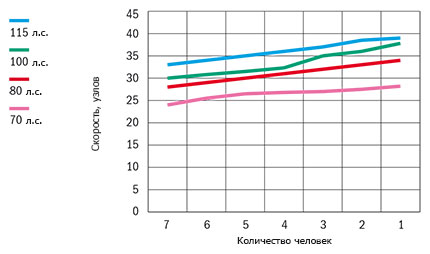

Катер Buster XL Pro (Бустер XL Pro)
Buster XL Pro (Бустер XL Pro) - надёжный катер для работы и проведения свободного времени на воде. Buster XL Pro (Бустер XL Pro) – выбор для любителей активного отдыха. Непотопляемый катер с прочным строением корпуса, отлично подходит для более напряжённой работы в более жёстких условиях эксплуатации. Широкий выбор многофункционального дополнительного оборудования позволяет оснастить ваш катер на желаемом уровне для рыбалки или профессионального использования!

XL Pro можно заказать с консолью, установленной в центре или с правого борта. В большой сиденье-бокс перед консолью помещается большой объём багажа. С помощью расположения консоли вы можете максимально оптимизировать использование внутреннего пространства. При проектировании особое внимание уделено удобству рыбаков. Возможен заказ моделей с двойными перилами из нержавеющей стали, для удобного крепления необходимых принадлежности на рыбалке. Массивные размеры Buster XL Pro (Бустер XL Pro) и палуба, из рифлёного алюминия обеспечивают безопасную и беспрепятственную работу.
Для работы или активного отдыха на воде необходимо максимальное свободное передвижение. Просторное свободное пространство на кокпите Buster XL Pro (Бустер XL Pro) не только обеспечивает удобное и беспрепятственное передвижение по судну, а также облегчает перевозку и хранение длинномерных предметов, таких как удочки и спиннинги. Рифлёные, алюминиевые и лёгкие в уходе поверхности эффективно препятствуют скольжению и выдерживают износ в течение многих лет. Просторный кокпит позволяет беспрепятственно выполнять необходимую работу. Практичное заднее сиденье на корме, удобное для забрасывания спиннинга во время рыбалки, состоит из двух частей, удобно складывающихся вниз. Buster XL Pro (Бустер XL Pro), как и все крупные модели Buster, обладает прекрасной остойчивостью и надёжностью. Гидравлическое рулевое управление облегчает управление катером и гарантирует безукоризненное подчинение водителю.
Технические характеристики катера:
| Параметр | Buster XL Pro |
|
Длина |
5.94 м |
|
Ширина |
2.17 м |
|
Масса (Без двигателя) |
590 кг |
|
Вместимость |
7 человек |
|
Рекоменд. мощность двигателя |
70 - 115 л.с. |
|
Емкость топливного бака |
100 л |
|
Осадка при полной нагрузке |
0,3 м |
|
Максимальная скорость |
39 узлов |
|
V-угол дна |
19° |
| График скорости | |
|  | |
Стандартное оборудование:
- Гидравлическое рулевое управление
- Консоль управления, ветровое стекло, закалённое
- Закрывающиеся багажные отсеки (система запирания замков одним ключом)
- Тарга-дуга
- Встроенный ящик для хранения тента
- Складные задние сиденья 2шт.
- Сиденье-бокс перед консолью
- Мягкое кресло Offshore с чехлом
- Ножка для кресла на рессорах
- Якорные боксы на корме, слева и справа
- Задние площадки на корме для спуска в воду
- Забортный трап
- Алюминиевые рифлёные поверхности
- Леерные ограждения, крепления и кнехты (нержавеющая сталь)
- Огнетушитель
- Отсек для аккумулятора
- Центральный выключатель с автоматическими предохранителями
- Автоматическая трюмная помпа
- Стационарный топливный бак
- Навигационные огни
- Мачта, съёмная
- Электрический разъём 12V
- Самоотливной кокпит
- Подготовительные работы для установки системы слежения Buster
Дополнительное оборудование:
- Комплект мягких подушек
- Тент на корму, из двух частей
- Штанга для буксировки вейкбордиста
- Подставка для вейкборда на штангу
- Чехол на консоль
- Многофункциональное сиденье (XL Pro CC, установка на заводе)
- Транцевые плиты с джойстиковым управлением (установка на заводе)
- Двойные леерные ограждения, нержавеющая сталь (установка на заводе), не совместимо с тентом на корму
- Автоматическая трюмная помпа
- Стационарный топливный бак
- Система запирания (трос, замки Abloy, система запирания одним ключом)
- Canvas*
- NAVI 7*
*Дополнительные опции устанавливаемые на заводе-изготовителе
NAVI 7: картплоттер Garmin 720s, компас, датчик эхолота с креплением.
Canvas: тент на корму с установкой.

{kind=link}
{kind=link}
{kind=link}
{kind=link}
{kind=link}